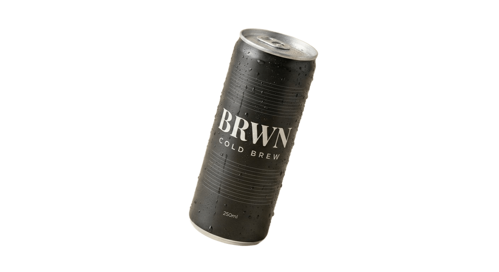

18 heures d'infusion
Pas de chaleur. Pas de précipitation. Le café s'infuse lentement dans l'eau froide pour révéler ses arômes les plus profonds.
Infusé 18 heures à froid.
Prêt quand tu l'es.

— Le produit
Pas de chaleur. Pas de précipitation. Le café s'infuse lentement dans l'eau froide pour révéler ses arômes les plus profonds.
La douceur naturelle du grain de café, rien d'autre. Aucun édulcorant, aucun additif. Juste le café dans sa forme la plus pure.
Le processus d'infusion à froid extrait davantage de caféine naturelle. Un boost propre, sans pic ni crash.
Chaque lot de BRWN est tracé jusqu'à la ferme. Nous travaillons directement avec des producteurs en Éthiopie et en Colombie pour garantir une qualité irréprochable et un commerce équitable.
"Le meilleur café
ne se boit pas chaud."
— Ils ont testé
« Je ne pensais pas qu'une canette pouvait remplacer mon double espresso du matin. BRWN l'a fait. »
« Le goût est incroyablement lisse. Pas d'amertume, pas de sucre caché. Je suis accro depuis 3 mois. »
« Enfin un cold brew qui ne ressemble pas à du café réchauffé. L'infusion froide change vraiment tout. »
— Commander
Livraison en 48h · Pack de 12 canettes · Satisfait ou remboursé